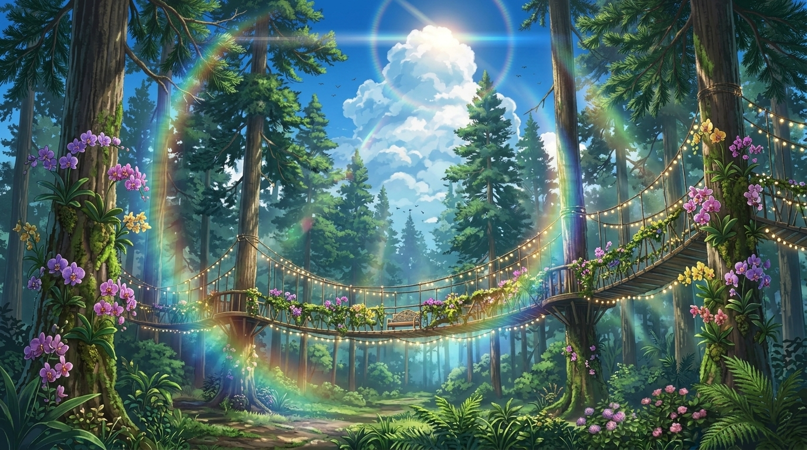
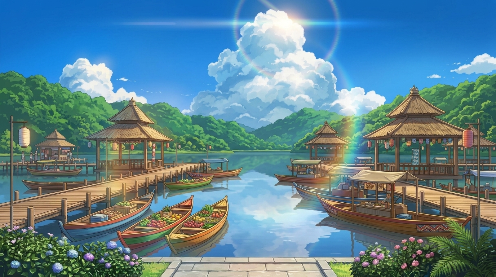

Alam
Alam
Kawah Putih Ciwidey
Danau kawah vulkanik eksotis dengan air berwarna putih kehijauan dan kabut belerang yang magis.
Lihat Detail →Jelajahi keindahan alam, pesona sejarah, dan kelezatan kuliner di Kota Kembang.
Mulai EksplorasiTempat-tempat ikonik yang wajib kamu kunjungi saat berlibur ke Bandung.
Alam
Danau kawah vulkanik eksotis dengan air berwarna putih kehijauan dan kabut belerang yang magis.
Lihat Detail → Sejarah & Kota
Sejarah & Kota
Pusat nostalgia kota Bandung dengan deretan arsitektur kolonial Eropa klasik dan kafe estetik.
Lihat Detail → Petualangan
Petualangan
Kawah gunung berapi raksasa yang melegenda, dikelilingi pemandangan alam kebun teh yang asri.
Lihat Detail →Tebing batu megah dengan panorama magis hamparan kabut pagi dan rimbunnya hutan pinus Dago.
Lihat Detail →
Wisata HutanKawasan hutan pinus sejuk di Lembang dengan jembatan gantung bercahaya dan koleksi anggrek langka.
Lihat Detail →
Wisata KeluargaPasar terapung seru di atas danau alami, menyajikan aneka jajanan tradisional khas Bandung dari perahu.
Lihat Detail →Cerita nyata dan pengalaman seru dari mereka yang sudah berkunjung.
"Kawah Putih bener-bener magis! Pemandangan kabut dan air toskanya bikin takjub. Wajib datang pagi hari pas masih sejuk dan belum terlalu ramai."
Tur Eksplorasi Kawah Putih Ciwidey
"Jalan Braga vibes-nya juara kalau sore menjelang malam. Nongkrong di kafenya sambil liat bangunan heritage terasa seperti nostalgia ke Bandung tempo dulu."
Braga Heritage & Coffee Walking Tour
"Anak-anak senang banget diajak ke Orchid Forest. Jembatan gantungnya estetik dan lampunya menyala cantik saat senja. Udaranya segar banget!"
Hal-hal yang sering ditanyakan wisatawan sebelum berlibur ke Kota Kembang.
Bulan Mei hingga September adalah waktu paling ideal karena curah hujan relatif rendah, cocok untuk eksplorasi wisata alam terbuka seperti Ciwidey dan Lembang.
Untuk area dalam kota (seperti Braga dan Riau), transportasi online atau sewa motor sangat praktis. Untuk wisata dataran tinggi (Lembang/Ciwidey), disarankan menyewa mobil harian.
Untuk hari kerja (weekdays) bisa langsung beli di tempat (on-the-spot). Namun saat akhir pekan (weekend) atau musim libur panjang, sangat disarankan pesan tiket online agar tidak antre panjang.
Secara umum, kisaran budget harian berkisar antara Rp 200.000 – Rp 500.000 per orang, sudah mencakup tiket masuk wisata reguler, kuliner lokal, dan transportasi.